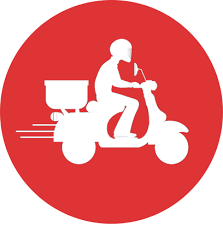

Mainpage About_Us Contact_Us Purpose of the site
 SuperFast Couriers can provide all this and so much more…
At SuperFast, our approach to courier services is unique. Our Courier Franchisees offer a cost effective, reliable, timetabled courier delivery service, backed up by the latest computer technology and online parcel track and trace facilities, making SuperFast Couriers the ideal choice for small to medium sized businesses.
With more than 250 Courier Franchisees across South Africa, from Johannesburg to Cape Town and almost everywhere in between, our commitment to delight our customers at every point in their parcel’s journey is what sets us apart from our competitors.
We believe in making the process of using a courier service easy and convenient for our customers – we can deliver on that promise thanks to the dedication of our franchise partners and their ongoing commitment to provide an unrivalled level of customer care for the 16.4 million parcels we move each and every year.